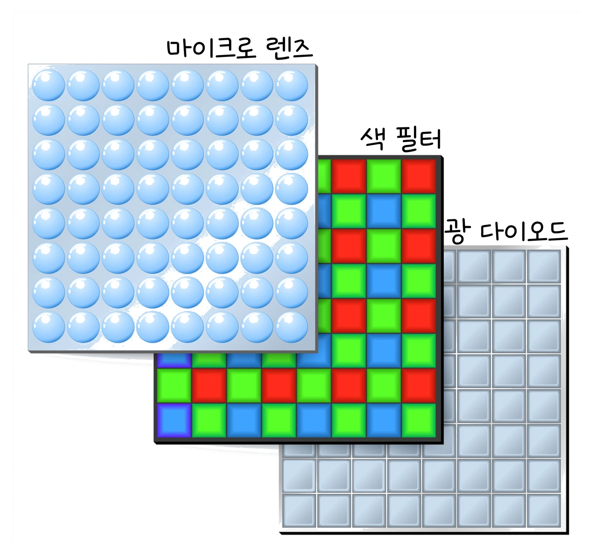

고3 전자기와 양자 · Ⅱ 빛과 정보 통신 · 웹툰 11화 「빛의 세기와 전자의 에너지」
광전 효과와 광센서 — 세기는 개수를, 진동수는 에너지를
실험에서 나트륨 금속 판(광전관)과 실리콘 광센서에 파장 300~1200 nm, 세기 1·2·4 mW의 빛을 비추며 광자 에너지, 전자의 최대 운동 에너지, 광전류를 쟀습니다. 세기를 2배로 하면 전류만 2배가 되고 전자 하나의 에너지는 그대로였으며, 나트륨은 약 544 nm보다 긴 빛에는 아무리 세게 비춰도 전자가 나오지 않았습니다. 광자 모형, 광전 효과, 이미지 센서와 태양 전지를 정리합니다.
- 웹툰 11화
- 실험: 파장·세기
- 과학 원리
- 자습 노트
- 다음: 동시에 0이면서 1
실험에서 얻은 것
실험 데이터 되짚기
실험 안내: 재료(나트륨·실리콘), 빛의 파장 λ, 빛의 세기를 고른 뒤 빛 비추기를 누르면 광자 에너지 hf, 초당 광자 수, K_max(정지 전압), 광전류가 기록됩니다. 나트륨으로 파장을 서너 번 바꾸고 한 파장에서 세기만 바꿔 4개 이상 기록하면 데이터 검증 탭에서 진동수–K_max 그래프(기울기 h)와 세기 비교표가 열립니다.
| 재료 | λ (nm) | 세기 | hf (eV) | K_max (eV) | 광전류 |
|---|---|---|---|---|---|
| 나트륨 | 400 | 1 mW | 3.10 | 0.82 | 0.32 µA |
| 나트륨 | 400 | 2 mW | 3.10 | 0.82 | 0.65 µA |
| 나트륨 | 500 | 1 mW | 2.48 | 0.20 | 0.40 µA |
| 나트륨 | 600 | 4 mW | 2.07 | − (안 나옴) | 0 µA |
| 실리콘 | 600 | 1 mW | 2.07 | (반도체) | 387.10 µA |
| 실리콘 | 1000 | 1 mW | 1.24 | (반도체) | 645.16 µA |
| 실리콘 | 1125 | 1 mW | 1.10 | (반도체) | 0 µA |
빛의 세기를 2배로 하면 광자 개수가 2배라 전류만 2배가 되고 K_max는 0.82 eV 그대로입니다. 전자 하나의 에너지는 광자 하나의 에너지 hf − W로 정해지므로, hf가 일함수(2.28 eV)보다 작은 600 nm 빛은 4 mW로 세게 비춰도 전자가 나오지 않습니다. 실리콘은 띠틈 1.12 eV(약 1107 nm)까지 반응하며, 같은 일률이면 파장이 긴 빛이 광자 수가 많아 전류가 더 큽니다.
개념 정리
1. 빛은 광자 알갱이로 에너지를 준다
진동수 f인 빛의 광자 하나의 에너지는 E = hf = hc/λ (hc ≈ 1240 eV·nm). 전자 하나는 광자 하나의 에너지만 받습니다.
- 광전 효과(금속): Kmax = hf − W (W: 일함수). hf < W이면 아무리 센 빛도 전자가 나오지 않아요. 정지 전압 Vs = Kmax/e.
- 빛의 세기를 키우면 광자 개수가 늘어 전류가 커지지만, 전자 하나의 에너지는 그대로입니다.
- 반도체(실리콘): 광자 에너지가 띠틈 Eg(약 1.12 eV)보다 크면 전자-양공 쌍이 생겨 전류가 흐릅니다. 약 1100 nm보다 긴 빛에는 반응하지 않아요.
영상 정보와 태양 전지
이미지 센서의 각 픽셀은 들어온 광자 수에 비례하는 전자를 모아 밝기를 숫자로 바꿉니다. 태양 전지는 광자 에너지 중 대략 띠틈만큼만 전기로 쓸 수 있고 나머지(hf − Eg)는 열이 되므로, 파장이 짧을수록 버려지는 몫이 커집니다.
교재 그림
광전관과 이미지 센서


위: 금속판(−)에서 튀어나온 광전자가 감지기(+)로 끌려가 전류가 흐릅니다. 아래: 이미지 센서는 화소마다 마이크로 렌즈로 빛을 모으고, 색 필터로 한 가지 색만 통과시켜 광 다이오드가 그 광자 수를 전자로 바꿉니다.
움직여 보기
빛을 세게? 파장을 짧게? — 광자 하나가 전자 하나에
나트륨에 400 nm를 비추면 K_max 0.82 eV, 세기를 2배로 해도 0.82 eV 그대로이고 전류만 0.32 → 0.65 µA. 600 nm는 hf(2.07 eV) < W라 4 mW로 세게 비춰도 전자가 나오지 않습니다. 실리콘은 1 107 nm보다 짧은 빛에서 전자–양공 쌍을 만들어 전류가 흐릅니다(양자 효율 나트륨 0.1 %, 실리콘 80 %, 실험 모형값). 노란 점이 광자, 파란 점이 튀어나온 전자이며 개수·빠르기는 화면용으로 줄였습니다.
2. 실험 모형과 실제의 차이
· 실제 양자 효율은 파장마다 크게 다르고, 금속 표면 상태에 따라 일함수도 달라집니다.
· "쓸 수 있는 몫 Eg/E"는 정성적 상한이며, 실제 실리콘 태양 전지 효율은 대략 20 % 안팎입니다.
나트륨 일함수 W ≈ 2.28 eV(문턱 파장 약 544 nm) · 실리콘 띠틈 Eg = 1.12 eV(약 1107 nm) · h ≈ 4.14×10⁻¹⁵ eV·s
영상으로 보기
예제
파장 300 nm 자외선을 나트륨(W = 2.28 eV)에 비출 때 광자 에너지, 최대 운동 에너지, 정지 전압을 구하라.
E = 1240 ÷ 300 = 4.13 eV. K_max = 4.13 − 2.28 = 1.85 eV, 정지 전압 1.85 V. 세기를 바꿔도 이 값은 그대로입니다.
파장 500 nm, 일률 1 mW인 빛에서 1초에 나오는 광자 수를 구하라.
광자 하나 = 2.48 eV = 2.48 × 1.602×10⁻¹⁹ J = 3.97×10⁻¹⁹ J. 1×10⁻³ ÷ 3.97×10⁻¹⁹ ≈ 2.52×10¹⁵개. 이미지 센서는 이렇게 들어온 광자 수에 비례하는 전자를 모아 밝기를 숫자로 바꿉니다.